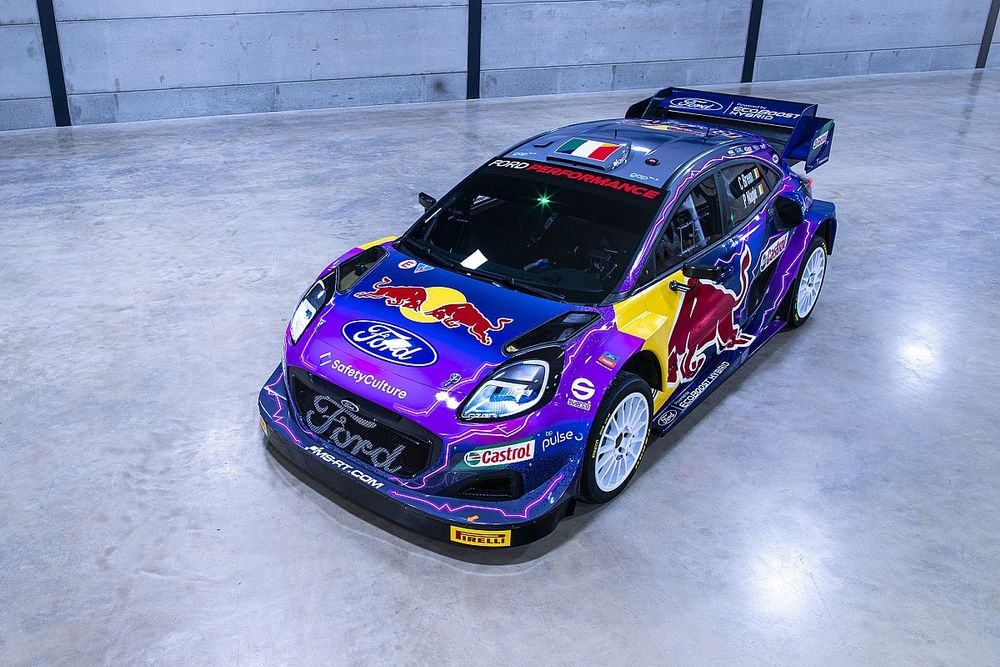

The youngster drives a GR Yaris for reigning manufacturers’ champions Toyota Gazoo Racing alongside Elfyn Evans and Sébastien Ogier,
who bids for a record ninth Monte win next week. Takamoto Katsuta also fields a similar car, although he will not score manufacturers’ points.
More info's at link: RALLYE MONTE-CARLO
Obrazek
Obrazek przedstawia nową broń M-sport, jest to Ford Puma WRC 2023
